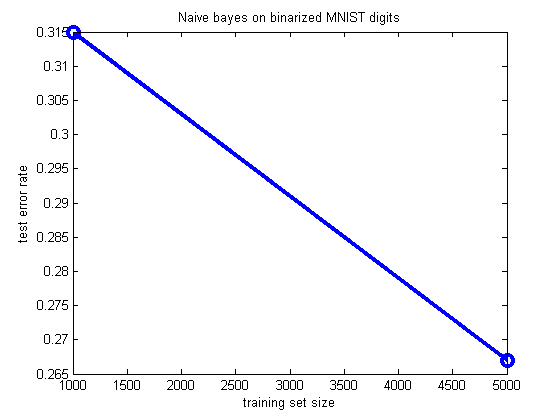
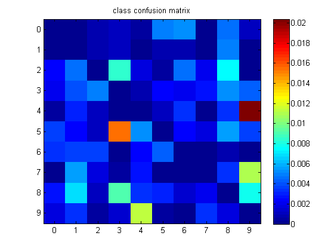
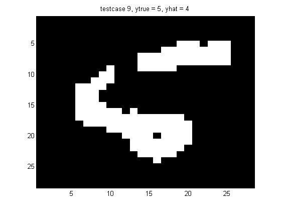
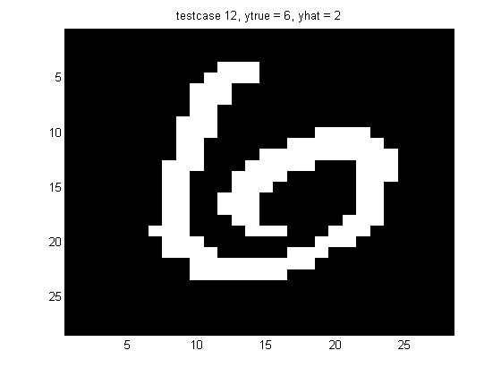

Naive Bayes classifier for binary MNIST digits
PMTKslow
%Ntrain=5000, 83 errors in 500, rate = 0.166 % This file is from pmtk3.googlecode.com loadData('mnistAll') % already randomly shuffled across classes % train_images: [28x28x60000 uint8] % test_images: [28x28x10000 uint8] % train_labels: [60000x1 uint8] % test_labels: [10000x1 uint8] % reshape to be size Ntrain*Ndims ytrain = mnist.train_labels; ytest = mnist.test_labels; Xtrain = reshape(mnist.train_images, [28*28 60000])'; Xtest = reshape(mnist.test_images, [28*28 10000])'; % Binarize for c=1:10 digit=c-1; ndx = find(ytrain==digit); mu = mean(Xtrain(ndx,:)); Xtrain(ndx,:) = Xtrain(ndx,:) > repmat(mu,length(ndx),1); ndx = find(ytest==digit); Xtest(ndx,:) = Xtest(ndx,:) > repmat(mu,length(ndx),1); end % save space clear mnist Xtrain = logical(Xtrain); Xtest = logical(Xtest); %trainSize = [1000 5000 10000 30000 60000]; trainSize = [1000 5000]; % 10000]; Ntest = 10000; for trial=1:length(trainSize) Ntrain = trainSize(trial); model = naiveBayesFit(Xtrain(1:Ntrain,:), ytrain(1:Ntrain)+1); yhat = naiveBayesPredict(model, Xtest(1:Ntest,:))-1; % 0..9 ndxError = find(yhat ~= ytest(1:Ntest)); nerr = length(ndxError) errorRate(trial) = nerr/Ntest %#ok end classConf = classConfMat(ytest(1:Ntest), yhat)/Ntest; figure; plot(trainSize, errorRate, 'o-', 'linewidth', 3, 'markersize', 10) xlabel('training set size') ylabel('test error rate') title('Naive bayes on binarized MNIST digits') printPmtkFigure('mnistNaiveBayesErrVsN') C=setdiag(classConf,0);figure;imagesc(C);colorbar set(gca,'yticklabel',0:9) set(gca,'xtick',1:10,'xticklabel',0:9) title('class confusion matrix') for j=1:min(2,length(ndxError)) i=ndxError(j); figure; img = reshape(Xtest(i,:), [28 28]); imagesc(img); colormap(gray) title(sprintf('testcase %d, ytrue = %d, yhat = %d', i, ytest(i), yhat(i))); end
nerr =
3150
errorRate =
0.315000000000000
nerr =
2670
errorRate =
0.315000000000000 0.267000000000000
   